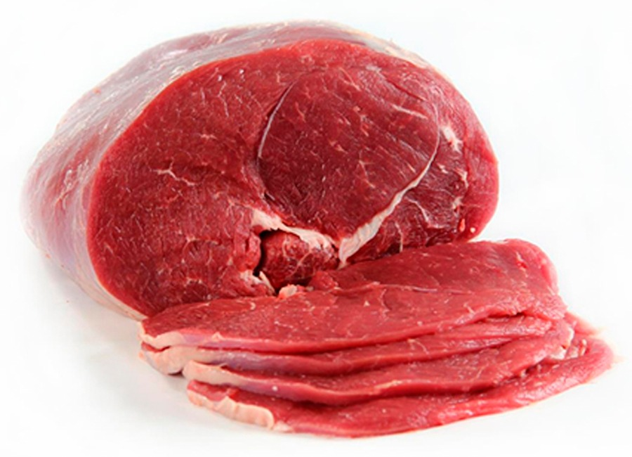
Frigorífico Don Silvio
Venta directa al público y al gremio gastronómico
Carne vacuna, cerdo y pollo de calidad premium al mejor precio, directo del frigorífico en Zona Oeste GBA. Venta minorista y mayorista: consultá precios y disponibilidad.
Carne vacuna, cerdo y pollo al mejor precio
Somos proveedores de carne vacuna, cerdo y pollo con calidad de exportación. Ofrecemos venta mayorista y minorista en Gran Buenos Aires y CABA, abasteciendo a restaurantes, bares, parrillas y carnicerías. Cortes premium para tu cocina diaria y tu negocio, al mejor precio. Consultá stock disponible.
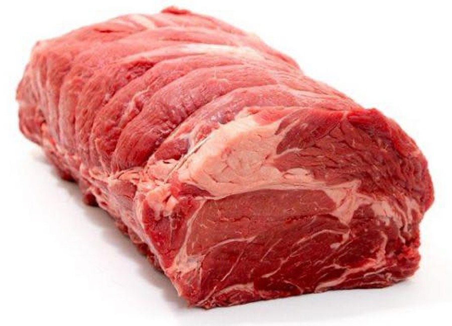
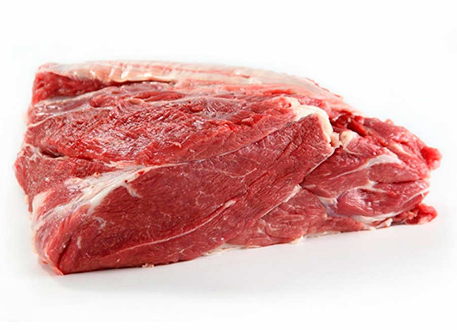
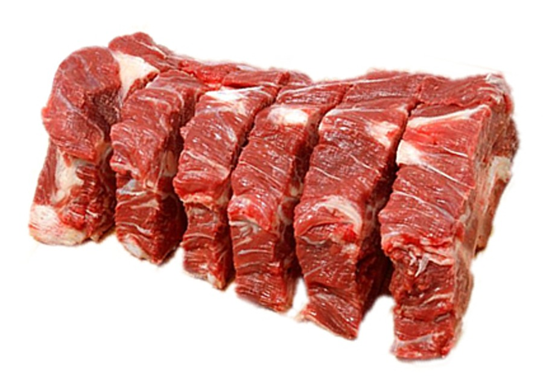
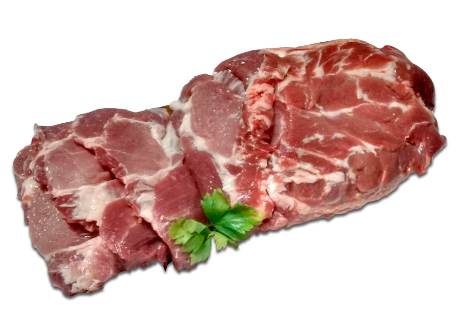
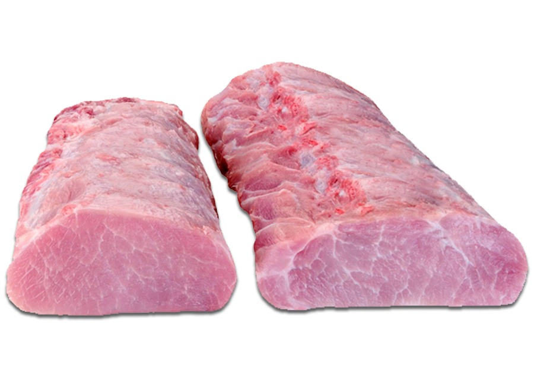
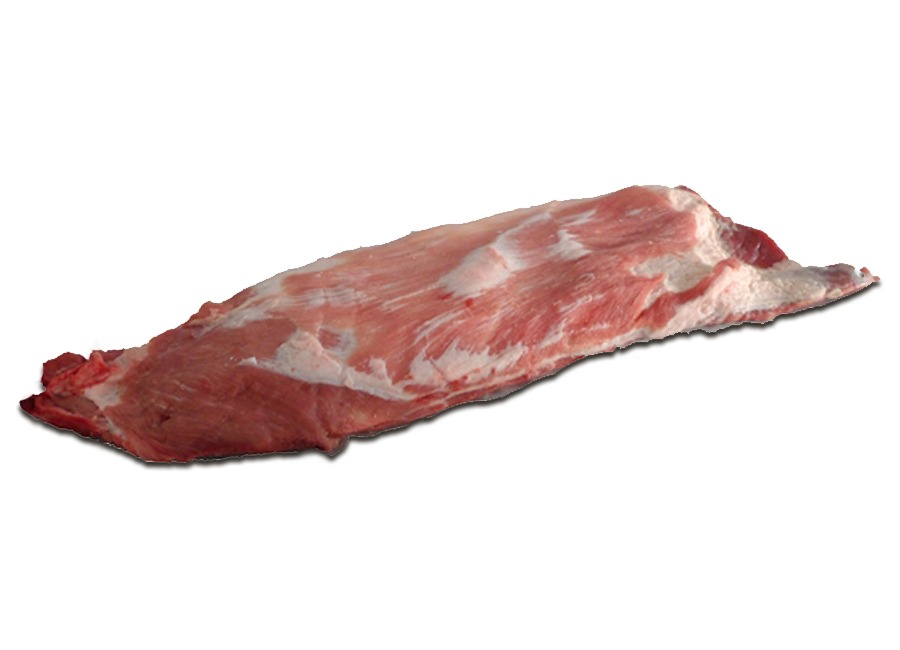
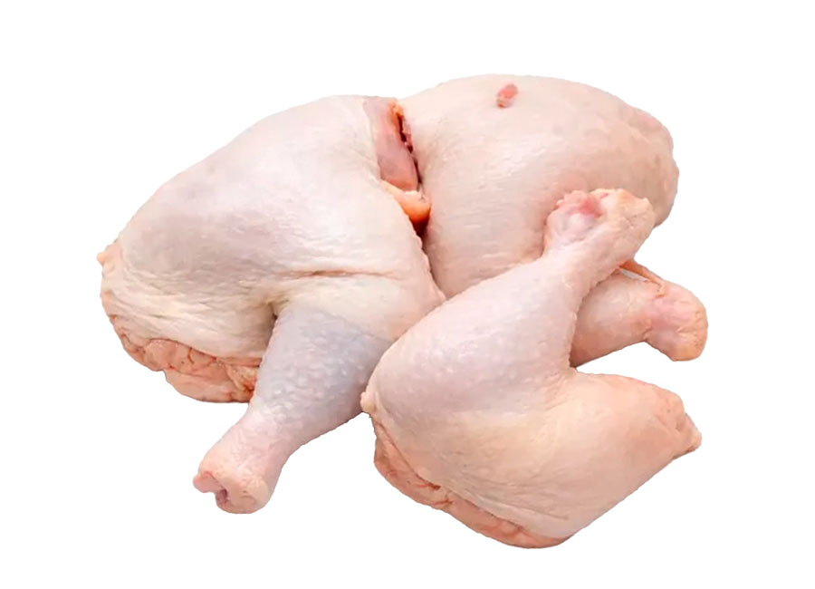
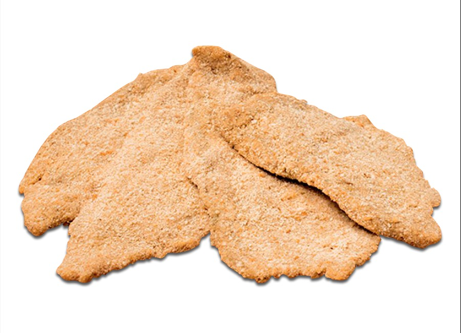
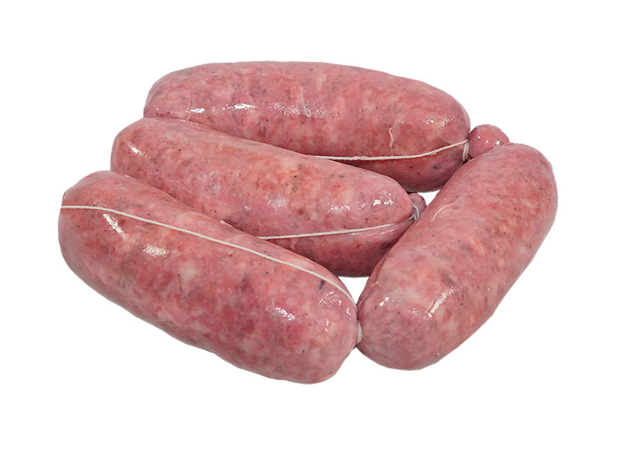
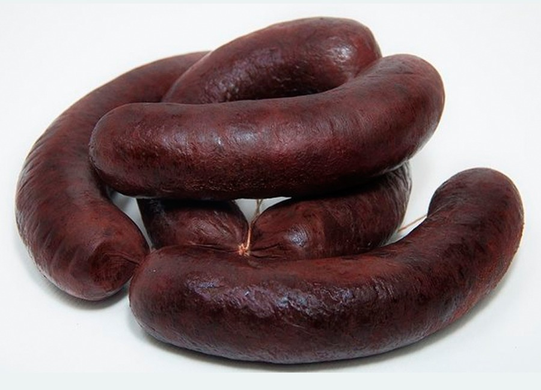
La variedad y el stock pueden cambiar según el día y la sucursal.
Consultar disponibilidad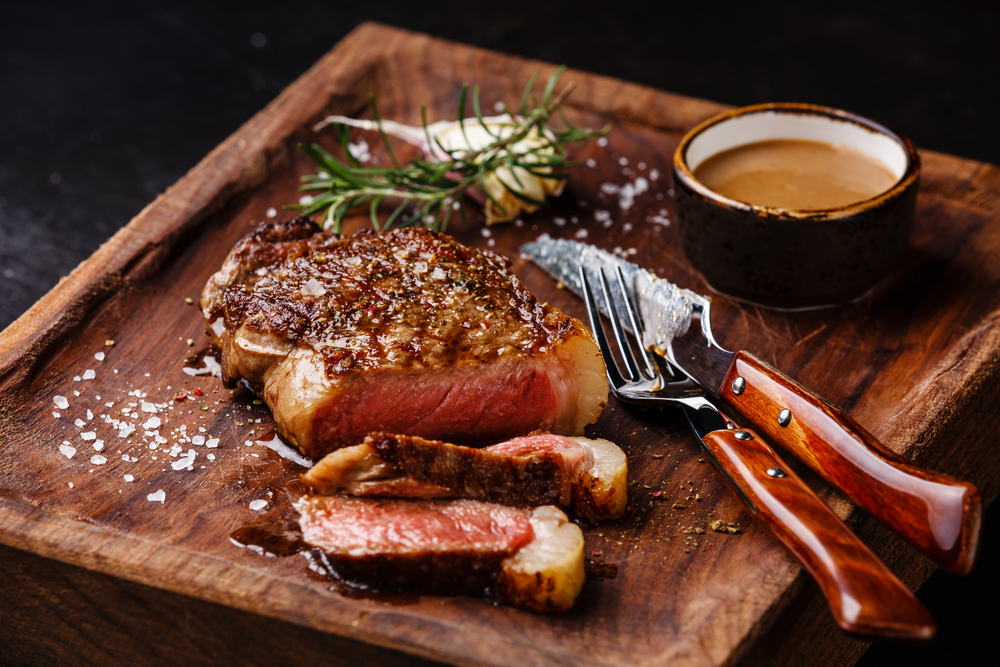
Los cortes más pedidos en Don Silvio
Si el asado del domingo, la milanesa de todos los días o el abastecimiento de tu carnicería dependen de tener la carne justa, acá comprás directo del frigorífico, sin intermediarios.
Para la parrilla
Asado de tira, vacío, bife de chorizo, entraña, matambre y ojo de bife.
Para milanesas
Nalga y bola de lomo: dos clásicos para resolver la comida de todos los días.
También encontrás cerdo, pollo, milanesas listas para cocinar y productos para parrilla: todo en un mismo lugar, según la disponibilidad del día.
Atendemos en Moreno, San Justo (La Matanza) y Libertad / Merlo, zona oeste, con venta minorista y mayorista. Escribinos y te orientamos sobre qué hay disponible hoy en cada sucursal.
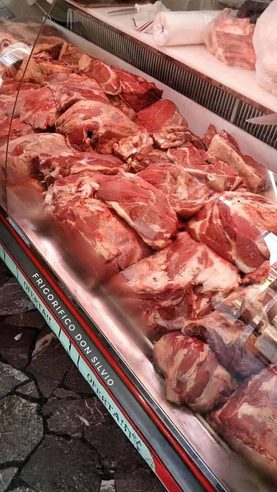
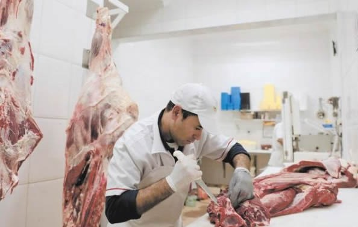
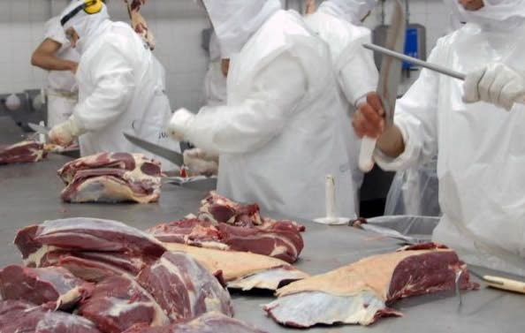
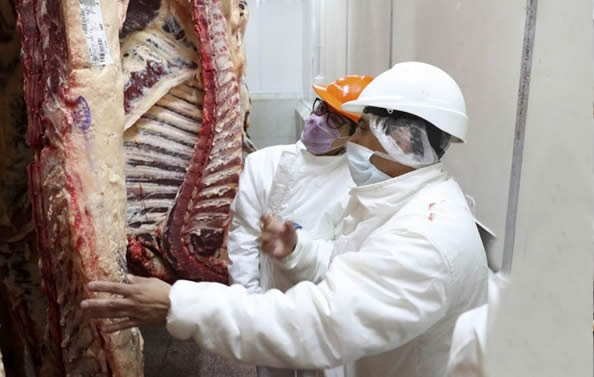
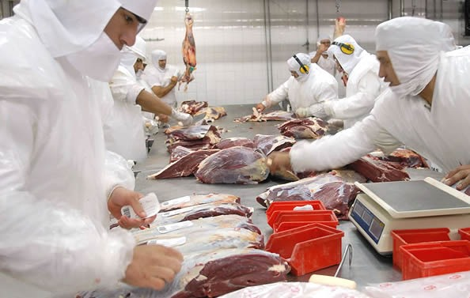
Quiénes somos
La escala de un mayorista, el control de una planta de exportación.
En Frigorífico Don Silvio nos dedicamos a la comercialización y producción de carne vacuna, pollo y cerdo. Abastecemos a carnicerías, parrillas, restaurantes y hogares de Gran Buenos Aires y CABA, con atención directa y la posibilidad de comprar desde la planta, según la modalidad de compra.
Para tu negocio
Consultá por media res de ternera o novillito y la posibilidad de desposte y fileteado corte por corte, según tus preferencias. Pedí la lista mayorista para conocer formatos, disponibilidad y condiciones vigentes.
Para tu casa
Encontrá cortes de carne vacuna y cerdo como asado, vacío, lomo, matambre, bondiola y pechito, además de milanesas de ternera y pollo listas para cocinar, según disponibilidad.
Calidad, inocuidad y trazabilidad
Los procesos BPM, SSOP, HACCP y QUACP acompañan el trabajo de planta tanto en compras minoristas como mayoristas. Consultanos por su alcance y documentación vigentes.
Consultar por WhatsApp- BPM
- Buenas Prácticas de Manufactura para la higiene del entorno y del equipo de trabajo.
- SSOP
- Procedimientos de saneamiento y limpieza de las áreas de producción.
- HACCP
- Análisis de peligros y seguimiento de puntos críticos durante el proceso.
- QUACP
- Control de calidad de la materia prima que ingresa y del producto terminado.
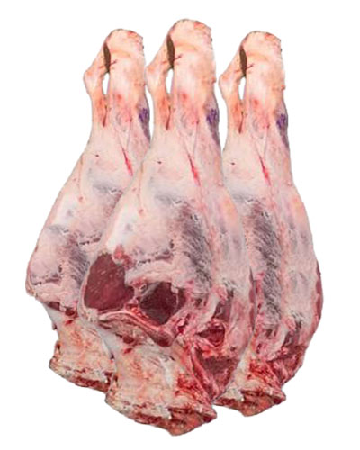
Mocho y parrillero de ternera: comprá al precio mayorista directo del frigorífico
En Frigorífico Don Silvio eliminamos los intermediarios para que accedas a la mejor carne de ternera o novillito al costo más bajo del mercado. Si buscás abastecer tu comercio —carnicería, restaurante o parrilla— o realizar una compra familiar inteligente, nuestra venta mayorista de media res es la solución. Nos encargamos del desposte y fileteo corte por corte según tus preferencias, garantizando frescura, trazabilidad y el máximo rendimiento.
A tu gusto, preparado con anticipación
Tanto el mocho como el parrillero se pueden pedir cortados, embolsados y etiquetados: en milanesas finitas, churrascos o piezas para horno. Para asegurar la frescura y organizar la logística, encargalos con 1 o 2 días de anticipación.
Lo que dicen nuestros clientes
Algunas opiniones reales compartidas por clientes de Frigorífico Don Silvio.
Andrea Pinzón
Buen lugar, excelentes precios, habia fila para comprar un martes al mediodía pero atienden rápido
Opinión publicada en Google
Isaias Lopez
Muy buena calidad y la atención de gabriel siempre excelente. Los super recomiendo
Opinión publicada en Google
NATALIA SAIPE
Muy buena carne la atención buenísima los chicos me llevaron la carne hasta el auto los precios baratísimos!!!
Opinión publicada en Google
Yanina Cabrera
Muy buena calidad de carne y precios incomparables . Excelente atención del personal
Opinión publicada en Google
Adrian Godoy
Muy buena la carne y el resto de sus productos, precios acorde y muy buena atención.
Opinión publicada en Google
Dónde encontrarnos
Sucursales Don Silvio en Zona Oeste del Gran Buenos Aires
Encontrá nuestra sucursal central en Moreno y los locales de San Justo y Libertad / Merlo. Consultá por WhatsApp los horarios antes de acercarte, especialmente en feriados.
01
Central · Moreno
La Granja Don Silvio
Avenida Gaona 4181B1743, Moreno, Provincia de Buenos Aires
Todos los días 06:00 a 21:00 hs, corrido
02
La Matanza
Don Silvio San Justo
Av. Pres. Dr. Arturo Umberto Illia 2932B1754KHA, San Justo, Buenos Aires
Lun. a sáb. 08:00 a 20:00 hs Dom. 08:00 a 13:00 hs
03
Merlo
Don Silvio Libertad / Merlo
José Miró 1862B1716, Libertad, Partido de Merlo
Lun. a sáb. 08:00 a 20:00 hs Dom. 08:00 a 13:00 hs
Direcciones y horarios informados para cada sucursal. Pueden cambiar en feriados; confirmalos por WhatsApp antes de acercarte.
¿Venden al público?
Sí, la información publicada presenta venta minorista en las sucursales. Consultá disponibilidad antes de acercarte.
¿También venden por mayor?
Se comunica venta mayorista para carnicerías, revendedores y gastronomía. Consultá la lista, los formatos y las condiciones vigentes.
¿Qué productos tienen?
Carne vacuna, cerdo, pollo, milanesas, achuras y productos para parrilla, según disponibilidad de cada sucursal.
¿Hay ofertas y precios por cantidad?
Consultá por WhatsApp los precios, promociones y formatos disponibles al momento de tu compra.
¿Hacen envíos?
La información disponible no confirma una modalidad vigente de envíos. Consultá directamente por WhatsApp.